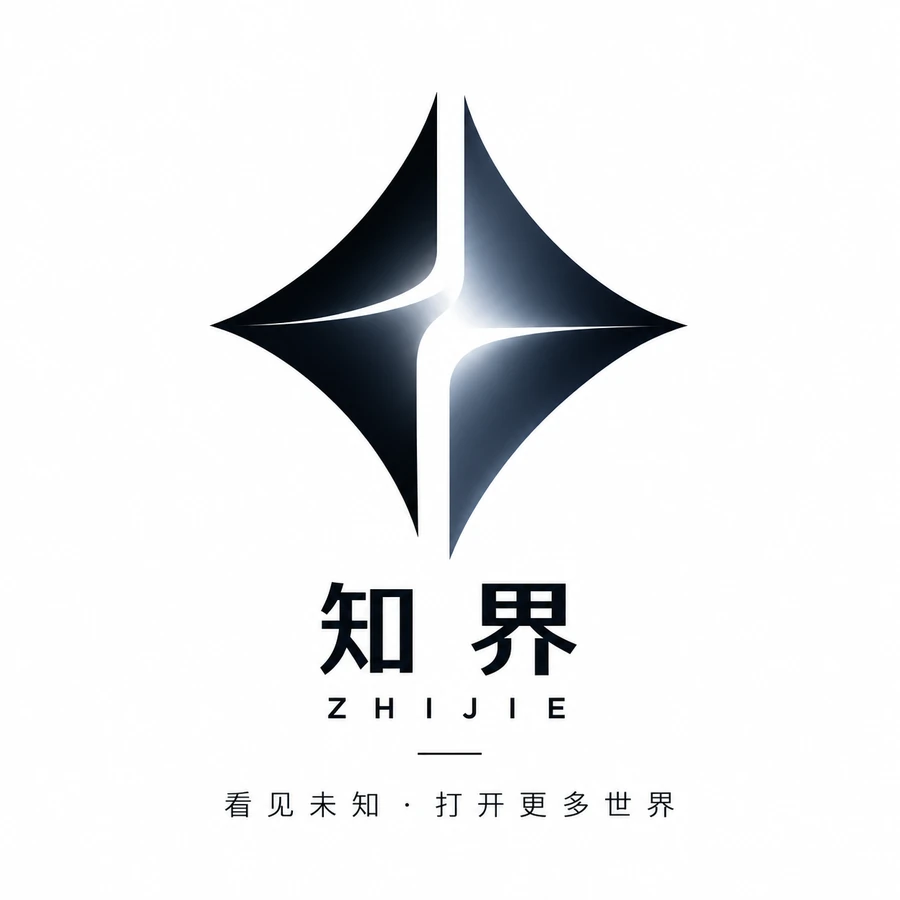

文件很多，想找答案却要翻半天
产品手册、合同模板、培训资料散在不同地方，问同一个问题总要找人。

知界ZHIJIE STUDIO知界 ZHIJIE · 企业 AI 落地服务
让公司资料随时可问，让重复办公少做一遍，让客户咨询有人先接住。知界帮你判断哪些工作适合用 AI，并根据真实业务做好落地；你不需要自己研究复杂工具。
先用脱敏样例判断可行性，再讨论接入和实施。
从你的日常开始
不必先想“要做什么 AI”。先找到占用时间、容易遗漏、又有相对稳定规则的工作。
产品手册、合同模板、培训资料散在不同地方，问同一个问题总要找人。
复制、粘贴、核对、生成日报，占走了本该处理业务的时间。
常见问题反复回答；真正需要人工跟进的线索却容易漏掉。
知界能帮你做什么
以下四种合作方式，覆盖资料查询、重复操作、客户接待和还不确定从哪里开始的情况。
把 PDF、Word、产品资料、SOP 和常见问答，整理成一个能直接提问的助手。
你操作一次，我们一起找出哪些步骤能让电脑以后按规则自己做。
没人值班时，先根据你的资料回答常见问题、收集需求；拿不准的转给人。
不知道 AI 能帮你做什么？把现有工作流程发来，我们先判断哪些值得改。
看得见的改变
以“表格内容录入业务后台”为例。下方是流程示意，不是对客户节省时间的承诺。
切换窗口、查字段、重复填写，再回头核对有没有漏填或填错。
系统记录执行结果；异常和不确定的内容留给人判断。能否接入你的后台，要先确认授权与实际流程。
工作室演示
以下是工作室制作的功能界面和演示流程，不是客户项目或成交成果。截图中的业务数据为测试数据。
将重命名、格式转换、内容提取和文件整理集中到清晰流程中，减少大量重复操作。
把多门店销售数据清洗、汇总并可视化，帮助快速查看趋势、品类结构和关键洞察。
自动获取、清洗和整理客户资料，生成标准化文件，并将处理结果按流程推送到指定渠道。
STUDIO PRODUCT / ZHIFLOW
ZhiFlow 是工作室正在开发的业务录入自动化系统。当前演示版使用独立的测试订单后台，展示从导入表格、确认填写规则，到逐条处理、标记异常和核对结果的完整流程。
实际开发界面截图 · 演示数据 · 当前未开放在线自助试用
针对有固定步骤的录入工作，先确认目标系统、字段规则和异常处理方式，再评估能否自动化。执行过程保留逐条结果，遇到不确定的数据交给人确认。
下面展示的是 ZhiFlow 演示任务写入测试订单后台后的列表截图。公司名称、订单和金额均为测试数据，不代表真实客户订单；接入你的业务系统前，需要单独确认授权、字段和验收标准。
怎么合作
第一次联系不用写技术方案，也不用马上购买。描述一件最重复的工作就够了。
用文字、脱敏样例或一段操作演示，告诉我们现在怎么做。
第一次沟通不需要你懂 AI确认规则是否稳定、资料是否可用、目标系统是否允许接入；不适合也会说明原因。
输出：初步可行性建议约定功能边界、资料处理方式、交付形式、报价和验收方法。
输出：可确认的方案在授权范围内制作、测试并交付，保留需要人判断的环节。
输出：可使用的结果与说明FAQ
价格、资料安全、不会 AI 也能不能用——先把这些问题说清楚。
可以。你只需要说明“现在怎么做、哪里最费时间、希望变成什么样”，技术方案由工作室评估并翻译成清楚的交付范围。
初步判断业务是否适合 AI 不收费。实施费用没有统一价格，会根据资料量、系统接入条件、功能范围和维护需求给出明确报价；你确认后才开始实施，不会因为提交表单自动扣款。
第一次沟通建议只发脱敏样例，不发送密码或客户敏感信息。正式实施前会确认资料使用范围、访问权限和交付方式；需要接入第三方 AI 服务时会先说明数据流向并取得同意。
规则尚未稳定、输入资料长期不一致，或依赖没有开放接口的平台时，通常建议先梳理流程或做小范围验证，再决定是否完整开发。
会提供约定范围内的使用说明、测试样例或操作指导。需要长期维护、多人协作或持续更新的项目，可单独约定支持方式。
目前先提交需求并确认服务范围。支付宝与微信支付的官方商户接口接通后，客户可在对应平台完成付款；支付结果以平台服务端通知为准，本站不会自行收集银行卡信息。
START A PROJECT
不用先选软件或写方案。告诉我们行业、最重复的一步和大约发生频率；有脱敏样例也可以在沟通时再提供。
微信扫码，添加工作室添加时请备注“官网咨询”
ORDER TRACKING
提交需求后会获得完整订单编号和独立查询凭证。两项必须同时正确才能查看进度，内部备注和联系方式不会在查询结果中公开。